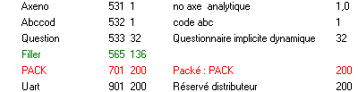
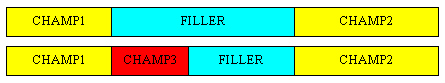
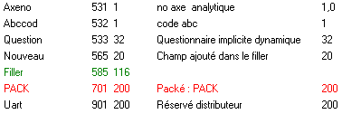
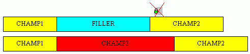
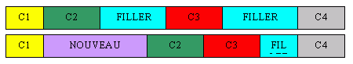

Une table peut contenir un ou plusieurs champs appelés Filler.
Les champs Filler, que nous appellerons directement Filler permettent de laisser des "trous" dans la structure de la table.
Ce trou pourra ensuite être utilisé pour agrandir un champ ou créer de nouveaux champs dans la table.
Utilité des Filler
Lorsqu'une application évolue, de nouveaux champs apparaissent dans les tables. Pour ne pas avoir à mouliner les fichiers existants à chaque modification du dictionnaire, il est conseillé de créer des Filler (au moins un par enregistrement) dans lequel seront placés les nouveaux champs.
Exemple (table Art de gtfdd.dhsd) :

Nous voyons que le champ PACK est précédé d'un Filler de 136 caractères. Cela signifie qu'il y a un trou dans la table de la position 565 à la position 700. Il sera donc possible d'ajouter des champs dans ce trou, sans avoir à mouliner les fichiers existants.
Création des Filler
Un filler peut être créé de trois manières :
vous décidez d'insérer un Filler dans la table (clic droit puis Créer Filler)
vous supprimez un champ. Dans ce cas, le champ supprimé est remplacé par un Filler. Vous pouvez ensuite supprimer le Filler si vous voulez tasser l’enregistrement. Si le champ supprimé était contigu à un Filler c'est ce dernier qui est agrandi.
vous réduisez la longueur d'un champ. Les caractères supprimés sont alors transformés en un Filler. Comme dans le cas de la suppression, si un Filler suivait le champ réduit, ce dernier est agrandi.
Insertion d'un champ avant un Filler
Lorsque un champ est ajouté avant un Filler, le Filler est rogné pour laisser la place au nouveau champ. On dit que le filler a un comportement élastique.
Exemple 1 :

CHAMP3 est inséré avant le Filler. Le Filler est donc réduit et décalé pour laisser la place à CHAMP3.
Si CHAMP3 avait été inséré avant CHAMP1, CHAMP1 aurait été décalé et le Filler réduit de la même manière que précédemment.
Exemple 2 (table Art de gtfdd.dhsd) :

L'insertion du champ Nouveau a provoqué la diminution la taille de Filler.
Insertion d'un champ plus grand que le Filler
Si le Filler n'est pas assez grand pour absorber le nouveau champ et que les champs situés après le Filler ne sont pas gelés, les champs sont décalés pour dégager suffisamment de place.
Si les champs situés après le Filler sont gelés, l'insertion d'un champ plus grand que le Filler est impossible. Voir Geler le dictionnaire .
Exemple :

L'insertion de CHAMP3 fait disparaître le Filler et décale CHAMP2. Cette opération est possible du fait que CHAMP2 n'est pas gelé.
Remarque
Si une table comporte plusieurs Filler, l’insertion d’un champ avant les Filler va rogner sur plusieurs Filler si nécessaire.

Voir également :